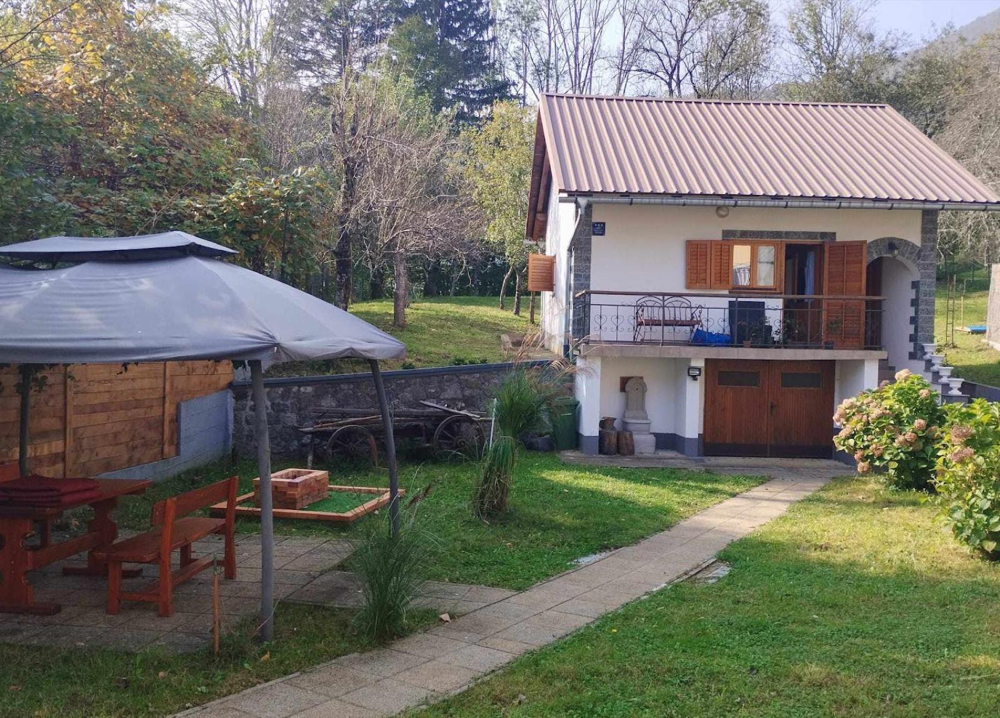
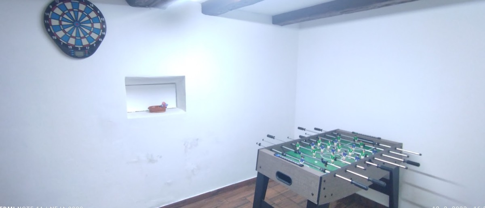
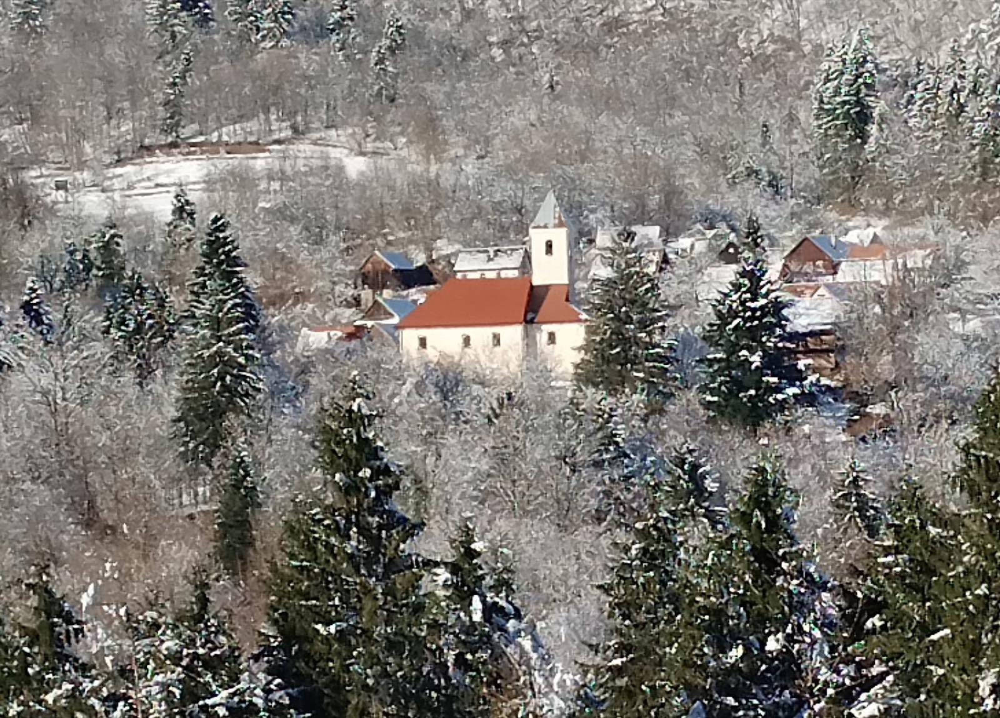
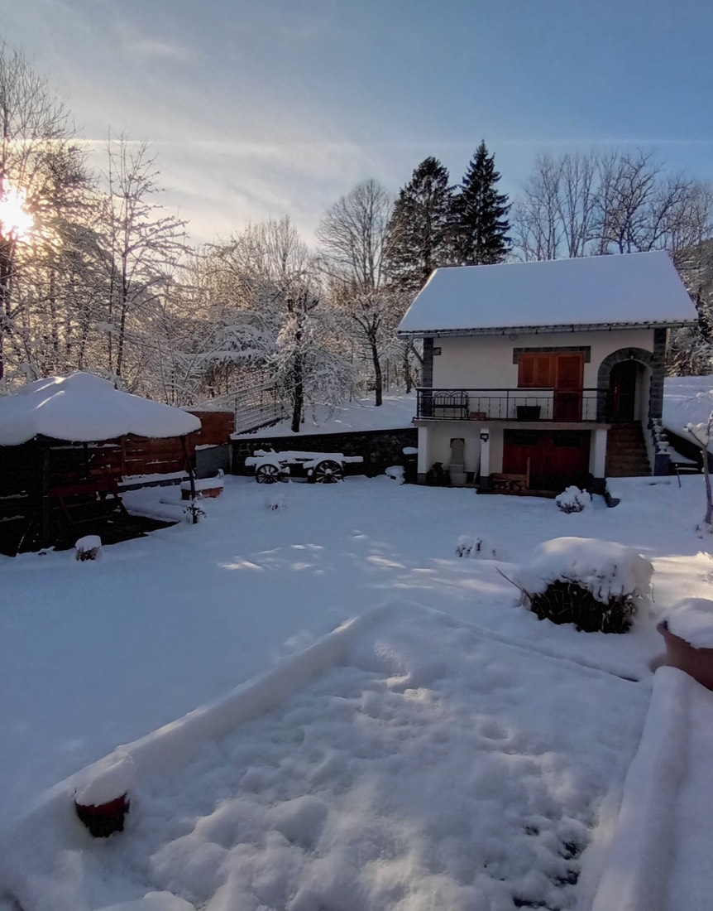
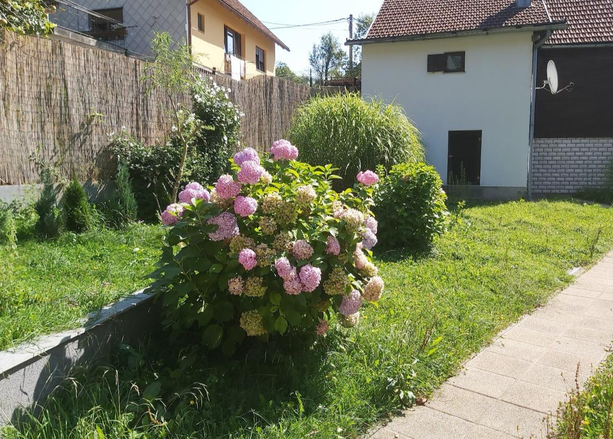
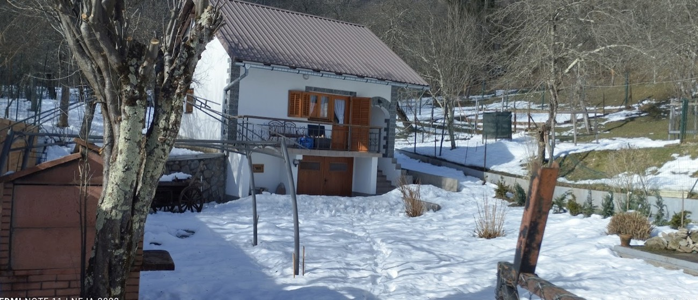

Masažna kada
Privatna masažna kada za do pet osoba, u dodatnom objektu uz kuću.
Kuća za odmor Denis u malom selu Velika Lešnica, nedaleko Broda na Kupi. Cijela kuća za do pet gostiju, vrt s roštiljem i sjenicom, a u dodatnom objektu masažna kada, stolni nogomet i pikado.



Bijela kuća sa smeđim škurama i balkonom stoji uz vrt i šumu. Iznajmljuje se cijela: dvije spavaće sobe, pet kreveta, kupaonica, dnevni boravak i kuhinja s blagovaonicom.
Gosti pišu da u kući ima „apsolutno sve što vam može zatrebati” i spominju dobrodošlicu s domaćim proizvodima.
Uz kuću je dodatni objekt s masažnom kadom i igrama, a u vrtu roštilj i sjenica. „Ima sve što vam je potrebno za opuštajući odmor”, napisao je jedan gost.
Privatna masažna kada za do pet osoba, u dodatnom objektu uz kuću.

Zidani roštilj, sjenica sa stolom i klupama, i vrt za boravak i objed na otvorenom.

U istom objektu kao i masažna kada: stolni nogomet, pikado i radio.

Velika Lešnica i crkva Majke Božje od Presvete Krunice pod snijegom. U kući čekaju peć, dodatne deke i masažna kada.
Domaćini su kuću fotografirali u svim godišnjim dobima. Ovako izgleda vrt kroz godinu.
Zasnježena sjenica i roštilj, a unutra topla kuća.

Rascvjetani grm uz stazu i svježa trava.

Stol u hladu, roštilj i zelena padina iznad sela.

Golo drveće, bijela trava i balkon s pogledom.

Sve fotografije snimili su i objavili sami domaćini. „Sve je identično kao na slikama”, napisala je jedna gošća.
Odlična kućica u kojoj možete odmoriti tijelo i dušu – mir i tišina! U kući se nalazi apsolutno sve što vam može zatrebati … Super domaćini, koji brzo odgovaraju na sve upite, a i odlična dobrodošlica sa domaćim proizvodima.
Prekrasna kuća i predivni domaćini! Cijeli boravak je bio savršen, od lokacije do sadržaja! Svakako ćemo se vratiti!
Ako volite mir i tišinu te udaljenost od gradske vreve, onda ste došli na pravo mjesto. Ima sve što vam je potrebno za opuštajući odmor, roštilj, hidromasažnu kadu, šumu, vrt …
Sve nam se svidjelo, sve je identično kao na slikama, tako da smo zadovoljni boravkom ovdje, i vraćamo se sigurno … Domaćini su ljubazni i susretljivi.
Za sve ostalo (datumi, cijena, dolazak) najbrže je nazvati domaćine.